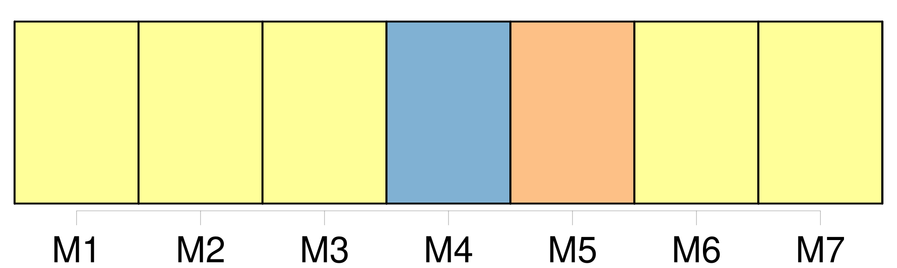
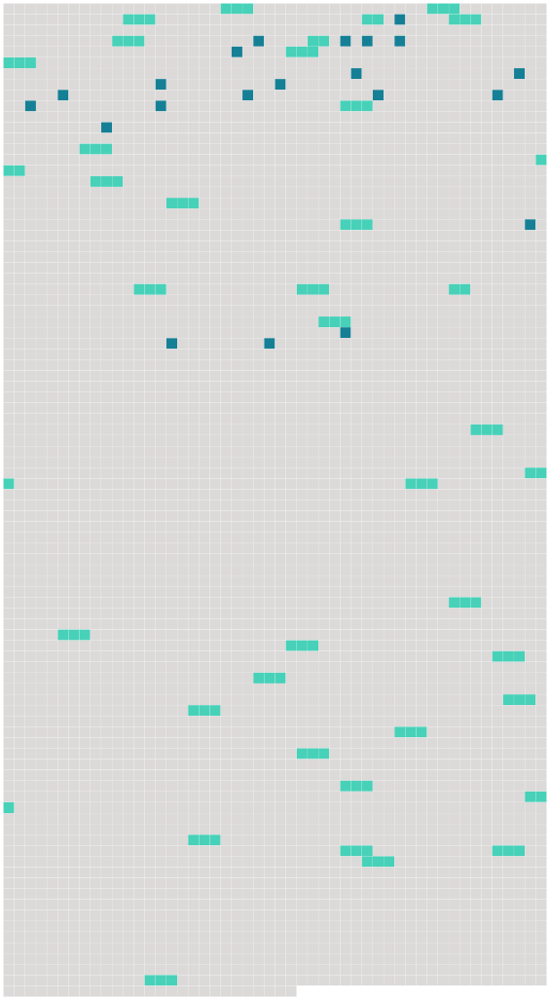

Longueur nb maillons : 59 mentions |
  |
L'Institut conclut avec le gouvernement de la République italienne un accord de siège, approuvé à l'unanimité par [le conseil supérieur]
CHAPITRE II [1 phrases]
[Le conseil supérieur] est formé de représentants des gouvernements des Etats contractants ; chaque gouvernement dispose d'une voix au sein de [ce conseil] et [y] délègue deux représentants.
[Le conseil supérieur] se réunit au moins une fois par an à Florence. [5 phrases] [Le conseil supérieur] est responsable de l'orientation principale de l'Institut ; [il] règle le fonctionnement de [celui -ci] et [veille] à [son] développement.
[Il] facilite les relations, d'une part, entre les gouvernements au sujet de l'Institut et, d'autre part, entre l'Institut et les gouvernements.
Pour accomplir les tâches qui [lui] sont ainsi confiées, [le conseil supérieur] prend les décisions nécessaires dans les conditions prévues aux paragraphes 5 et 6. [1 phrases]
Statuant à l'unanimité, [le conseil supérieur] [1 phrases]
Statuant à la majorité qualifiée, [le conseil supérieur] prend les décisions autres que celles prévues au paragraphe 5, notamment celles qui concernent : [4 phrases]
Les abstentions ne font pas obstacle à l'adoption des délibérations [du conseil supérieur] qui requièrent l'unanimité. [6 phrases]
Il établit le projet de budget annuel et le projet de prévisions financières triennales et les présente [au conseil supérieur] après consultation du conseil académique. [3 phrases]
Le président de l'Institut est choisi par [le conseil supérieur] , sur une liste de trois noms proposés par le conseil académique. [7 phrases]
Le secrétaire général et le président de l'Institut ne peuvent être de la même nationalité, sauf décision contraire prise à l'unanimité par [le conseil supérieur] [6 phrases]
[Le conseil supérieur] peut inviter à participer aux activités du conseil académique, dans les conditions qu' [il] détermine, des personnalités ressortissantes des Etats contractants et appartenant aux différentes catégories de la vie économique, sociale et culturelle, désignées en raison de leurs compétences. [3 phrases]
Le conseil académique [1 phrases]
Le conseil académique peut prendre l'initiative de soumettre [au conseil supérieur] des propositions concernant les questions qui relèvent de la compétence de [ce conseil] [7 phrases] [Le conseil supérieur] , statuant à l'unanimité, peut, après consultation du conseil académique et compte tenu de l'expérience acquise, modifier cette répartition ou créer de nouveaux départements. [2 phrases]
Dans le cadre des moyens qui [lui] sont ouverts par le budget ainsi que des programmes arrêtés par le conseil académique, le département dispose d'une large autonomie dans l'exécution des travaux d'étude et de recherche qui [lui] incombent et est doté du personnel nécessaire à [son] fonctionnement. [20 phrases]
Les conditions de délivrance du titre et du certificat prévus au présent article sont déterminées par le conseil académique ; ces conditions requièrent l'approbation [du conseil supérieur] [12 phrases]
Des ressortissants d'autres Etats peuvent être admis dans les limites et conditions fixées par les dispositions réglementaires arrêtées par [le conseil supérieur] après consultation du conseil académique. [1 phrases] L'admission à l'Institut est prononcée par le jury d'admission sur la base des règles fixées par la convention et par les dispositions réglementaires arrêtées par [le conseil supérieur] [30 phrases]
Il rend compte de sa gestion [au conseil supérieur] [3 phrases]
[Le conseil supérieur] statuant à la majorité qualifiée peut, sous réserve que les autres conditions fixées à l'alinéa précédent soient respectées, autoriser des dépenses excédant le douzième. [2 phrases] [Le conseil superieur] nomme deux verificateurs de nationalité différente pour une période de trois ans. [2 phrases]
Les verificateurs soumettent annuellement [au conseil supérieur] un rapport sur le résultat de leur examen. [4 phrases]
Le président établit un projet de previsions financières triennales et, après consultation du conseil académique, les soumet [au conseil supérieur] pour examen et appréciation. [8 phrases]
[Le conseil supérieur] , statuant à l'unanimité sur proposition du président de l'Institut ou de l'un des membres [du conseil supérieur] , arrête les dispositions réglementaires financières spécifiant notamment : [1 phrases]
Les dispositions réglementaires financières prévues au paragraphe 1 peuvent prévoir la création d'un comité budgétaire et financier composé de représentants des Etats contractants et chargé de préparer les délibérations [du conseil supérieur] en matière budgétaire et financière. [4 phrases]
Les modalités selon lesquelles ces langues sont choisies, sont fixées par [le conseil supérieur] , statuant à l'unanimité. [5 phrases]
Article 29 [3 phrases]
[Le conseil supérieur] se réunit immédiatement après l'entrée en vigueur de la convention. [9 phrases]
L'adhesion prend effet à la date à laquelle [le conseil supérieur] , statuant à l'unanimité et en accord avec l'Etat adhérent, a déterminé les modifications nécessaires à apporter aux dispositions de la convention, notamment à son article 6 paragraphe 7 et à son article 19 paragraphe 1.
Article 33
Si [le conseil supérieur] , statuant à l'unanimité, émet un avis favorable à la réunion d'une conférence des représentants des gouvernements des Etats contractants, celle -ci est convoquée par le gouvernement qui assume la présidence [du conseil supérieur] [14 phrases] Les textes de la convention rédigés en langues anglaise, danoise et irlandaise, tels qu'ils figurent en annexe à la décision [du conseil supérieur] précisant les modifications rendues nécessaires par l'adhésion du royaume de Danemark, de l'Irlande et du Royaume-Uni de Grande-Bretagne et d'Irlande du Nord, font foi au même titre que les textes originaux mentionnés ci-dessus, et le gouvernement de la République italienne en remet une copie certifiée conforme au gouvernement de chacun des autres Etats contractants. |
 |
La ressource peut être téléchargée sur la page Ortolang
Si vous avez des questions ou vous voyez des erreurs, merci d'envoyer un mail à silvia.federzoni89@gmail.com
Site développé par S. Federzoni (contact)